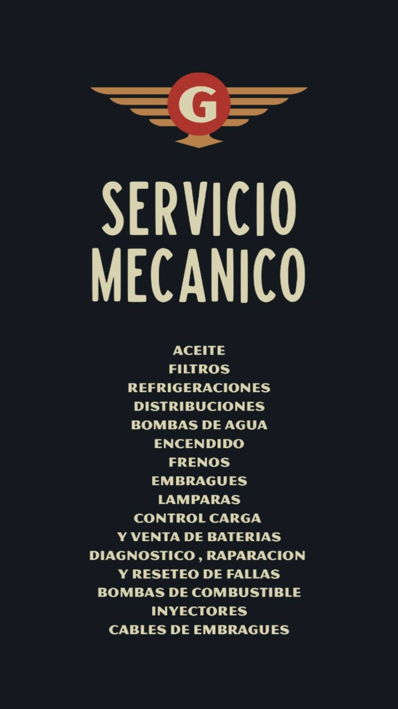

Reparación general
Diagnóstico, reparación y reseteo de fallas. Distribución, encendido, bombas de agua y de combustible, inyectores.
Desde 1979 abocados a la reparación automotor. Servicios preventivos, reparaciones y venta de repuestos de todas las marcas nacionales e importados, en el corazón de Rosario.
Servicios preventivos y reparaciones: del mantenimiento de rutina al diagnóstico electrónico avanzado. Trabajamos todas las marcas.
Diagnóstico, reparación y reseteo de fallas. Distribución, encendido, bombas de agua y de combustible, inyectores.
Frenos, embragues y cables de embrague. Componentes de todas las marcas, colocación y control.
Cambio de aceite, filtros y refrigeraciones. Mantenimiento preventivo para que tu auto no pare.
Control de baterías y de carga del alternador. Chequeo del sistema eléctrico, lámparas y venta de baterías.
Escaneo, diagnóstico, reparación y reseteo de fallas electrónicas con equipamiento actualizado.
Todas las marcas, nacionales e importados. Consultanos antes de venir: tu consulta no molesta.

En Gallo combinamos taller mecánico y venta de repuestos en un mismo lugar, para brindarte rapidez y solución al problema de tu vehículo.
Desde 1979 abocados a la reparación automotor. Casi medio siglo atendiendo autos en Rosario, con la misma forma de trabajar: trayectoria, responsabilidad y compromiso con cada vehículo que entra al taller.
"Sr. Cliente, recuerde que todos los precios están sujetos a modificaciones por el mercado. Consúltenos antes de dirigirse al local, su consulta no molesta."
Cómo llegarDesde 1979 abocados a la reparación automotor. Casi medio siglo de oficio en el mismo lugar, con clientes que vuelven generación tras generación.
Más de cuatro décadas trabajando el automóvil: conocemos los modelos viejos y los nuevos, y sabemos dónde mirar primero.
Diagnóstico y presupuesto claros antes de tocar nada. Se hace lo que hay que hacer, con repuestos que respondan.
Trato directo y honesto. Tu auto sale del taller andando como tiene que andar y quedás como cliente, no como número.
Escribinos por WhatsApp y te asesoramos sin cargo. Tu consulta no molesta.